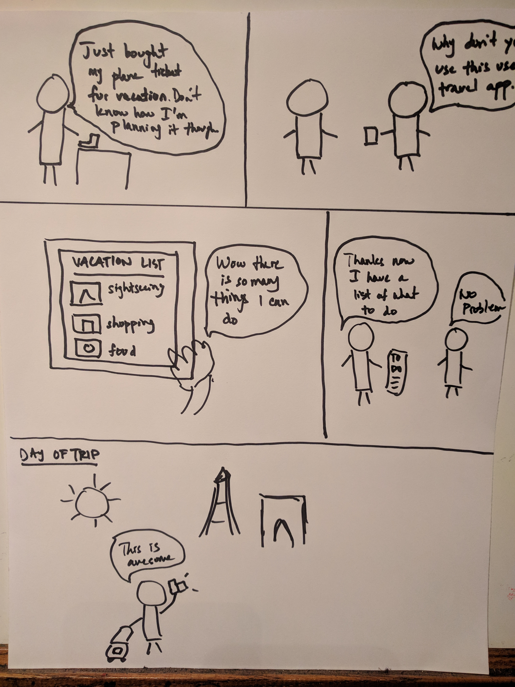

TravelWiz
TravelWiz.herokuapp.com
Jan - Mar 2018
An WebApp, to help make planning for travel easier.

Introduction
About TravelWiz
TravelWiz is the creation of a course long group project thought up by two partners in a COGS 120 (Interaction Design) class at UCSD. The project was to create a Web Application, using JavaScript, partially Node.js, and was launched using Heroku. There is a project focus based on the section we were assigned to, that being to create an app with a focus on Presenting Information. What we decided to create is a scheduling app specifically to help when planning a vacation. This is done by what information is presented to the user.
My Role
Team Leader
I was the team leader of this group project. As the team leader, I distribute roles to my other two members, along with making an implementation plan to keep up with deadlines. I also created storyboards, wireframes, and prototypes to keep up with the ideas of the group. Unfortunately one of our group members dropped the class, thus I had to redistribute roles between two students. I took up most of the back end work, implementing user inputs and processing these inputs to results, and some front-end work, while my partner dealt with most of the front-end and design work. I also conduct user-testing, reviewing these tests to make improvements and make the call to make changes; skipping or changing an implementation to keep up with deadlines.
Group Members: Vincent Pham, Phan Huynh
P.O.V
Point Of View
Vacation is the time to relax. The time to enjoy yourself, and let your worries fade away. While vacationing is relaxing, unfortunately planning for a vacation can be a tiring and stressful process. Along with booking flight, lodging, and figuring out modes of travel. You also have to figure out how you want to spend your trip, what activities you want to do, what to eat, etc. Figuring out what activities to do can be difficult as people tend to focus on one type, like sightseeing, and sometimes forget about other activities; visiting local cuisines, tours, etc. Missing out or skipping on these activities may lessen an enjoyable experience.
Storyboards
Storyboarding
Below are three scenarios that display potential uses of our apps in different situations.
The user just booked out their vacation, but doesn’t have a plan on what to do. By using the app the user is able to see a variety of options available to them at their destination that they didn’t know about before. Know what is available, the user creates a to-do list and enjoys their vacation.

The user is researching activities available at a destination they are planning to go to. After visiting many websites they are frustrated that there isn’t an easier way to plan out their trip. After getting a recommendation from a friend to use the app, they got their plans done quickly.
Two people are going on a trip together. One friend gives their friend the list of their plans together and realizing that it is just sightseeing, the other friend recommends using the app. After using the app the friend created a plan with a variety of activities.
Prototypes
Lo-Fi & Hi-Fi Prototypes and Wireframes
Below are various paper prototypes and wireframes designs. We first started with paper prototypes for quick user research and testing, examining how users interact with various functions of the app.
Since the focus of the section is a focus of presenting information. Things that were focused on is how to give users important information quickly. Some things that were done is creating sections for specific activities. As for the descriptions, we believe that a quick summary of the activity and average hour and prices is important for travelers and help in making a decision.
For this prototype, there is a focus on the functionality of how users choose a destination and the activities, and put the chosen activities into a schedule.
This prototype focuses on the functionality of viewing the user schedule. This includes a day to day list, and detailed description of each activity. It also allows the user to add notes to whatever activity that they want.
After the main design and functions are finalized, wireframes are created using Sketch, and InVision, which is later used for further testing and research before coding the app.
Testing
User Testing, Research, and Results
After the main function and app was mostly completed. It was ready for research through user testing and feedback. Testing was conducted using an A/B testing method; having users try a version of the app that has various changes between each other. Testing was done through in-person, chosen with convenience sampling. During testing we observe how users interact with the app, identify user breakdowns. After testing, we conduct an interview for feedback, to see what was good, how to improve user breakdowns to further make improvements to the app.


From feedback, we made some changes that we believe improved the overall app experience. Some of these changes include a way for users to go back to the top of the page quickly (without scrolling). Thus we added an arrow button at the side of the screen to instantly bring the users to the top of the page when clicked. Another change was making the submit button static at the bottom of the screen rather than the end of the page. This gave users a quicker way to access the schedule page (rather than needing to scroll). One of the bigger changes is to the schedule page. It originally would list the activities of the user, the changes now include activities being color coded based on the activities group/identity, for example eating being purple, sightseeing being blue, etc. This gives users instant feedback on their schedule.
Improvements
Future Improvements & Conclusion
There were some things that were planned but didn’t make it into the final product due to lack of time or inability to create such a task, especially with only two people. One main thing I wanted to do was to redesign the scheduling page, where the user can see their schedule for the day in a more calendar format; having the hours listed from top to bottom on the left (ex. 8AM, 9AM etc.), then a vertical box to cover the timeframes for those hours, allowing more visuals for users to see the length of a particular activity for the day. Another thing I wanted to fix was that the schedule wasn’t able to sustain its information; the information deletes itself after leaving the page. If given more time I believe that we would be able to fix this issue. Also another thing is that we didn’t allow the users to make comments on the schedule page.